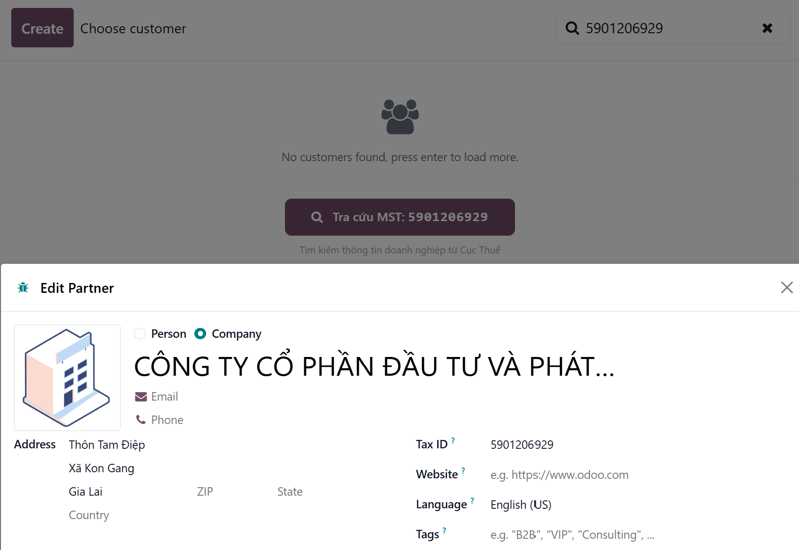
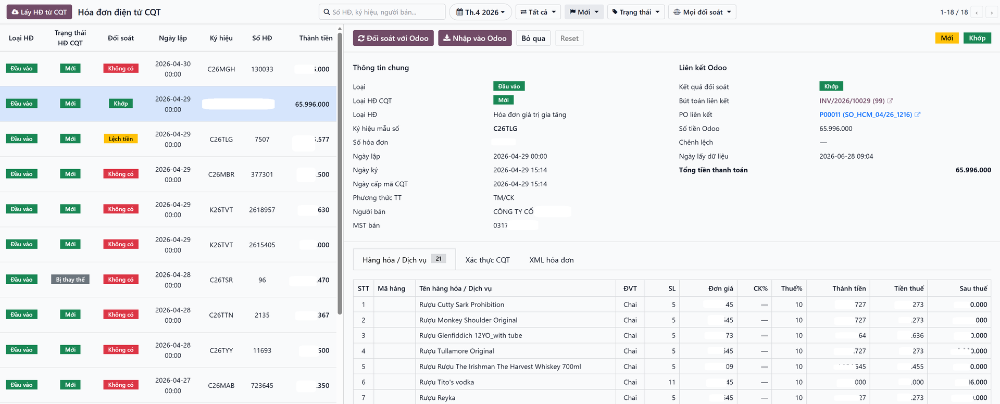
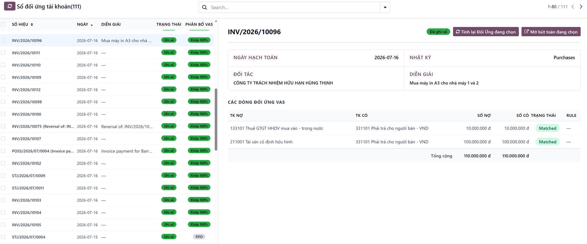
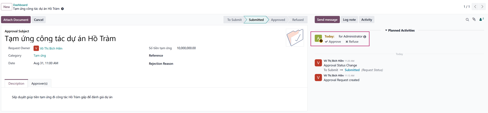
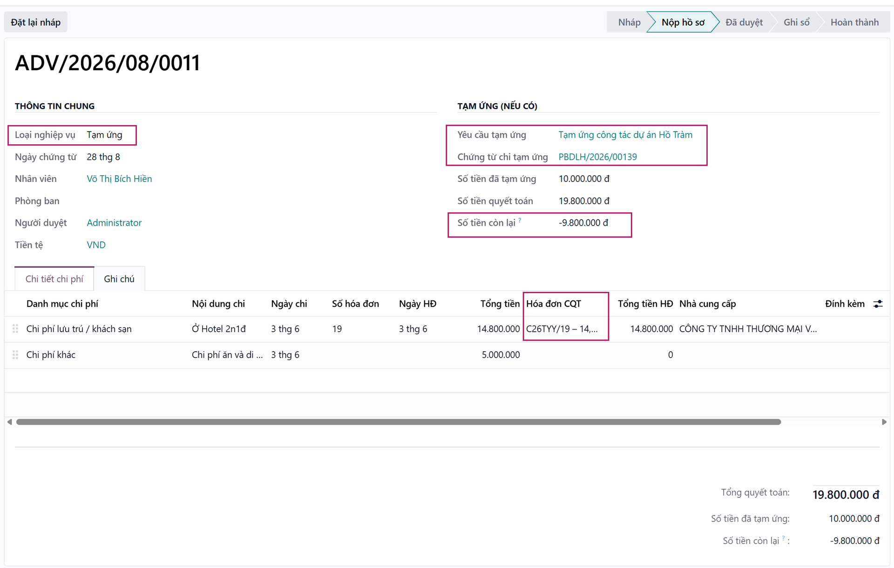
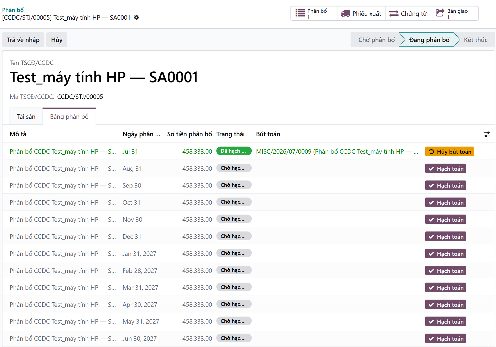
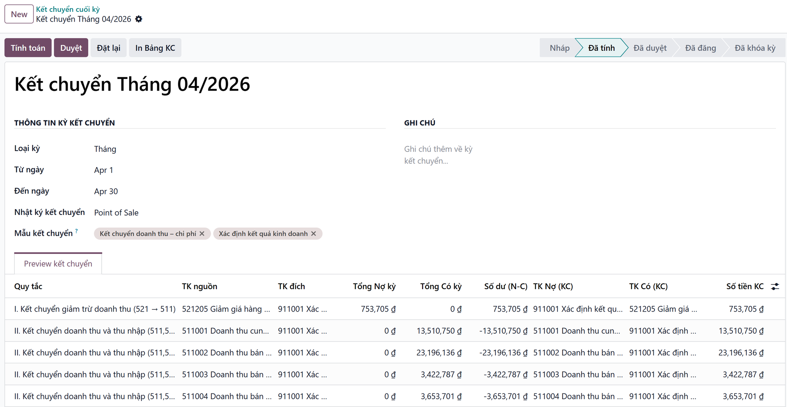
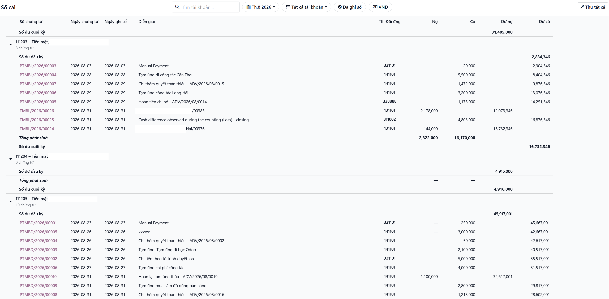

VI — Hub2S VAS bổ sung lớp bản địa hóa kế toán Việt Nam trên nền tảng Odoo, giúp doanh nghiệp chuẩn hóa nghiệp vụ kế toán, tự động hóa các thao tác thường xuyên và quản lý chứng từ, sổ sách, báo cáo theo yêu cầu thực tế tại Việt Nam.
EN — Hub2S VAS adds a Vietnam-specific accounting localization layer to Odoo, helping businesses standardize accounting workflows, automate repetitive tasks, and manage accounting documents, ledgers, and reports in line with business requirements in Vietnam.
VI — Từ dữ liệu đầu vào → kiểm soát → hạch toán → tạm ứng & chi hộ → đóng kỳ → báo cáo, VAS kết nối các nghiệp vụ kế toán thành một quy trình thống nhất ngay trên Odoo.
EN — From data capture → validation → accounting → advances & payments on behalf → period closing → reporting, VAS connects key accounting processes into one integrated workflow within Odoo.
VI — Odoo cung cấp một nền tảng kế toán toàn cầu mạnh mẽ. Hub2S VAS bổ sung các nghiệp vụ và cách thức quản lý phù hợp hơn với thực tế kế toán Việt Nam.
EN — Odoo provides a powerful global accounting platform. Hub2S VAS extends Odoo with workflows and accounting capabilities designed for the practical requirements of Vietnamese businesses.
Nền tảng kế toán cốt lõi gồm Kế toán, Hóa đơn, Thanh toán, Đối soát, Tài sản và Báo cáo tài chính.
Core accounting platform covering Accounting, Invoicing, Payments, Reconciliation, Assets and Financial Reporting.
Tra cứu MST · Hóa đơn điện tử · Tài khoản đối ứng · Tạm ứng & Chi hộ · TSCĐ & CCDC · Kết chuyển cuối kỳ · Biểu mẫu & báo cáo TT99.
Tax ID Lookup · E-Invoice Processing · Counterpart Account Analysis · Employee Advances & Payments on Behalf · Fixed Assets & Tools · Period-End Closing · Circular 99 Forms & Reports.
Tạo khách hàng và nhà cung cấp trực tiếp từ Mã số thuế, giảm thao tác nhập liệu và hạn chế dữ liệu trùng lặp.
Create customers and vendors using their Tax ID, reducing manual data entry and helping maintain clean master data.

Kết nối dữ liệu hóa đơn với Odoo và hỗ trợ kiểm soát hóa đơn trong quy trình mua hàng.
Tự động lấy dữ liệu hóa đơn từ Viettel S-Invoice về Odoo.
Với hóa đơn dịch vụ/chi phí, hệ thống có thể dùng dữ liệu hóa đơn và quy tắc cấu hình để đưa ra gợi ý hạch toán.
Connect invoice data with Odoo and strengthen invoice control throughout the purchasing process.
Automatically retrieve invoice data from Viettel S-Invoice into Odoo.
For service and expense invoices, configured accounting rules can suggest journal entries for accountant review and posting.

Bổ sung khả năng phân tích và ghi nhận tài khoản đối ứng Nợ/Có cho các nghiệp vụ thực hiện thông qua reconciliation.
Giúp dữ liệu Odoo được trình bày và phân tích gần hơn với cách tiếp cận quen thuộc của kế toán Việt Nam.
Extend Odoo with Debit/Credit counterpart account analysis for transactions processed through reconciliation.
This helps present and analyze Odoo accounting data in a way that is more familiar to Vietnamese accountants.

VI — Quản lý toàn bộ quy trình Tạm ứng – Chi hộ – Quyết toán – Cấn trừ – Hoàn ứng trên Odoo.
EN — Manage the complete Employee Advance – Payment on Behalf – Settlement – Reconciliation – Final Settlement workflow directly in Odoo.
Nhân viên tạo yêu cầu tạm ứng qua Odoo Approval, gồm người đề nghị, số tiền, mục đích, bộ phận/dự án và quy trình phê duyệt.
Phân biệt TK 141 – Tạm ứng và TK 338x – Chi hộ / phải trả nhân viên; khoản chi vẫn liên kết với yêu cầu đã duyệt.
Hỗ trợ lấy dữ liệu hóa đơn điện tử từ nguồn tích hợp và khai báo các khoản chi ngoài hóa đơn.
Tạo Vendor Bill, ghi nhận chi phí, VAT nếu có, sinh bút toán và tự động cấn trừ theo workflow cấu hình.
Tạm ứng thừa → Thu hồi. Tạm ứng thiếu → Chi bổ sung.
Employees create advance requests through Odoo Approval with requester, amount, purpose, department/project and approval workflow.
Distinguish Account 141 – Employee Advances and Account 338x – Employee Payables / Payments on Behalf.
Retrieve electronic invoice data from the integrated source while supporting expenses without VAT invoices.
Support Vendor Bill creation, expense/VAT recognition, related journal entries and automated reconciliation according to the configured workflow.
Excess advance → Employee repayment. Additional expense → Additional payment.


Quản lý tài sản cố định và công cụ dụng cụ từ mua sắm đến đưa vào sử dụng, điều chuyển và thanh lý.
Có thể liên kết tài sản và CCDC với phòng ban hoặc dự án.
Manage fixed assets and tools throughout their lifecycle, from acquisition and deployment to transfer and disposal.
Assets and tools can be linked to departments or projects.

Tự động hóa bút toán kết chuyển cuối kỳ theo cấu hình doanh nghiệp.
Hỗ trợ kết chuyển 511, 632, 641, 642 và các tài khoản liên quan về TK 911 – Xác định kết quả kinh doanh.
Automate period-end closing entries based on the company's accounting configuration.
Support closing of 511, 632, 641, 642 and related accounts to Account 911 – Determination of Business Results.

Đưa các biểu mẫu và sổ kế toán trực tiếp vào Odoo, giúp hạn chế xuất dữ liệu sang Excel để xử lý thủ công.
Bring Vietnamese accounting forms and ledgers directly into Odoo, reducing the need to export accounting data to Excel for manual processing.

VI — Hub2S VAS được thiết kế cho doanh nghiệp tại Việt Nam đang sử dụng hoặc triển khai Odoo và cần bổ sung các nghiệp vụ kế toán, biểu mẫu, sổ sách và quy trình phù hợp với thực tế Việt Nam.
EN — Hub2S VAS is designed for businesses in Vietnam that are using or implementing Odoo and need Vietnamese-specific accounting workflows, forms, ledgers, and reporting capabilities.
VI — Hub2S Vietnam phát triển các giải pháp ERP và AI dành cho doanh nghiệp, tập trung vào việc kết nối nền tảng Odoo với các yêu cầu vận hành thực tế tại Việt Nam.
EN — Hub2S Vietnam develops ERP and AI solutions for businesses, with a focus on connecting Odoo with the practical operational requirements of Vietnamese companies.
Zalo: (+84) 902 611 333
Email: sales@hub2s.com
VI — Để được hỗ trợ cài đặt, triển khai hoặc tùy chỉnh Hub2S VAS theo yêu cầu doanh nghiệp, vui lòng liên hệ Hub2S Vietnam.
EN — For installation, implementation, or enterprise-specific customization support, please contact Hub2S Vietnam.
Vietnam Accounting Localization for Odoo
Standardize. Automate. Control.
Chuẩn hóa nghiệp vụ kế toán Việt Nam trên nền tảng Odoo.